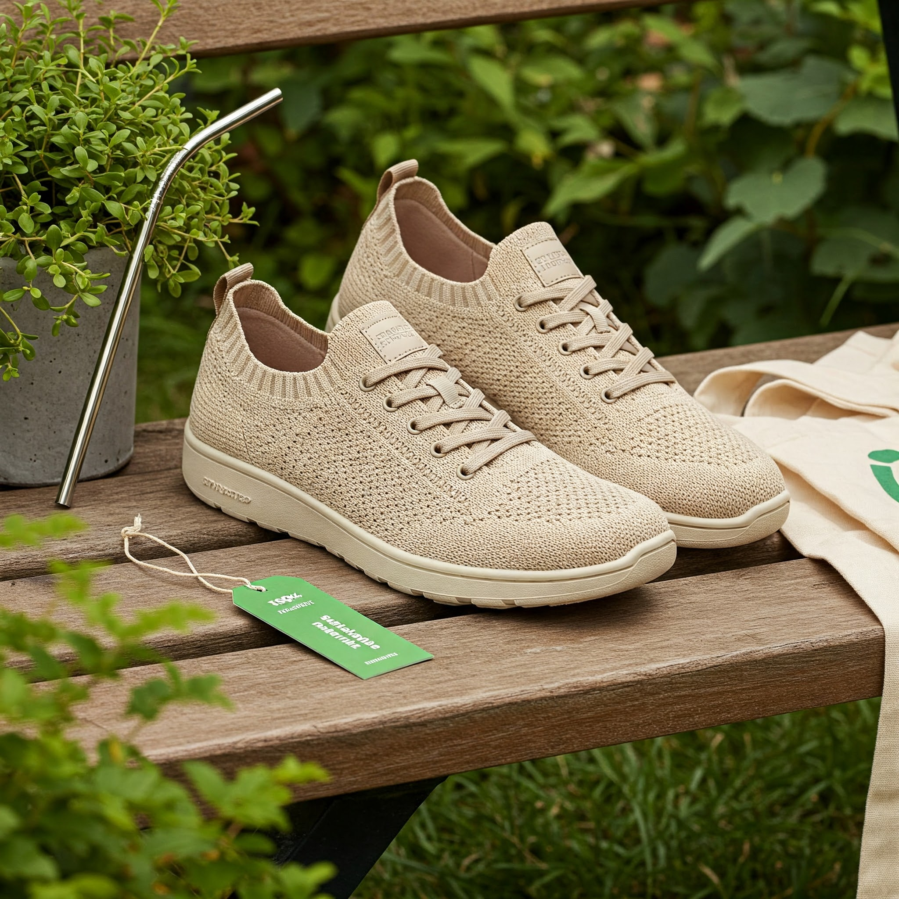
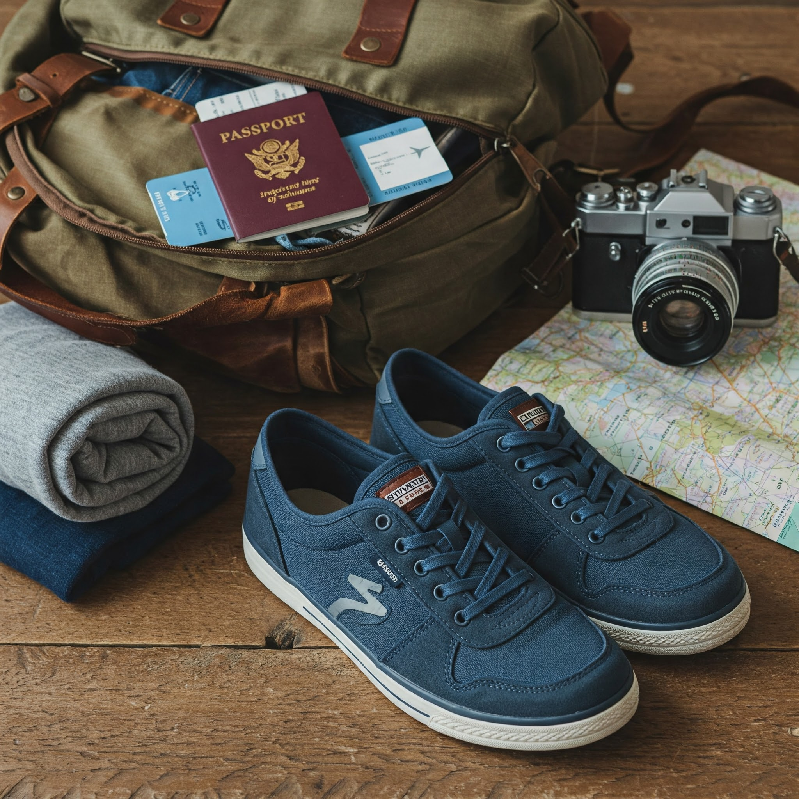
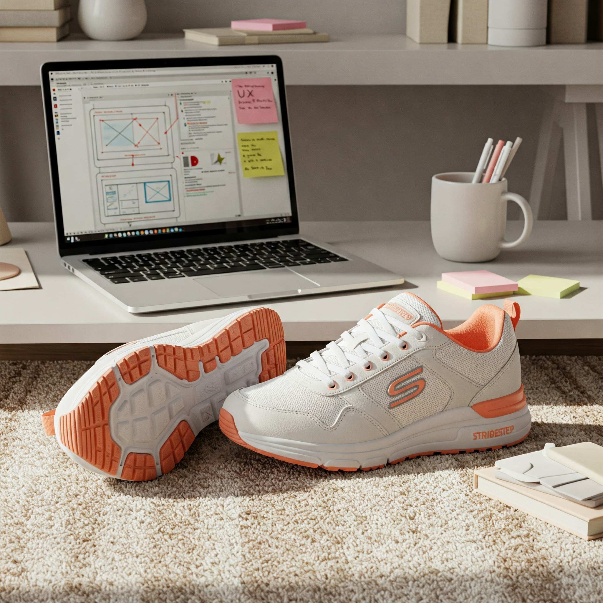

At StrideStep, we obsess over every stitch and sole. The result is the perfect balance of performance, comfort, and style.
Shop sneakersPerformance All Day
Our sneakers are built for performance and all-day wear, combining cutting-edge materials with ergonomic design.
Style-Forward Design
Every pair is crafted with style in mind — whether you're hitting the streets or going casual.
Eco-Conscious Materials
We use vegan leather, organic cotton, and recycled rubber to craft sustainable sneakers.
  "StrideStep sneakers are a perfect blend of comfort and performance. I wear them for my daily runs and meetings!"
Fitness Coach & Entrepreneur
01
What is your return policy?
You can return your sneakers within 30 days, no questions asked, as long as they’re in original condition.
02
Do you offer international shipping?
Yes! We ship worldwide. Delivery times and shipping costs vary depending on your location.
03
How should I care for my sneakers?
We recommend using a damp cloth for cleaning. Avoid machine washing to preserve material quality.